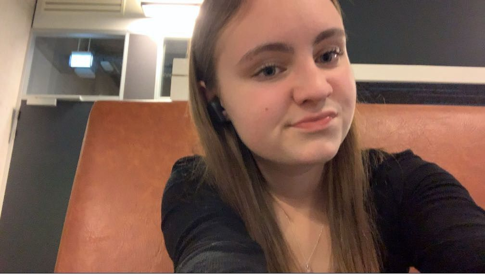
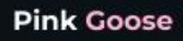
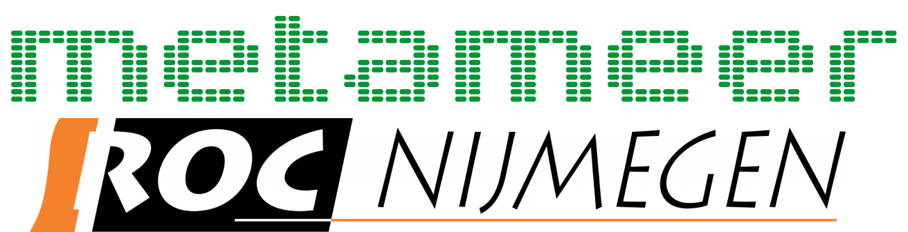

- 
-
Hoi, Mijn naam is Fleur Thijssen, ik ben 16 jaar oud en ik zit op de opleiding
Software Developer op het ROC Nijmegen Technovium. Ik heb deze website zelf
ontworpen en gemaakt in de 2e periode van het eerste leerjaar.
Kijk gerust even naar alles wat ik gemaakt heb!
Hi, my name is Fleur Thijssen, I'm 16 years old and I am studying
Software Development at ROC Nijmegen Technovium. I designed and made
this website all by myself in the second semester of my first year.
Take a look around and make sure to check out what else I made!
-
Na 2 periodes hebben we al heel wat gemaakt,
ik heb al 2 websites gemaakt en het spel Mastermind in Java.
After two semesters we have made a lot,
I made 2 websites and the game Mastermind in java.
- 
- 
-
Toen ik op de middelbare school zat heb ik 3 jaar HAVO gedaan en
na mijn 3e leerjaar ben ik gezakt naar MAVO en heb ik eindexamen gedaan
en ben ik in een keer geslaagd met alles boven een 7.
Daarna ben ik naar het ROC gegaan om de opleiding Software Developer te
gaan doen, deze opleiding duurt 4 jaar en is een niveau 4 opleiding.
When I was in Highschool I did 3 years Havo and after my third year I
dropped to mavo and I did my exams and graduated with every grade above a 7.
After that I went to ROC to study Software Developer, this will take me
4 years and it is a level 4 study